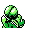

#002
Ivysaur
GrassPoison
When the bulb on its back grows large, it appears to lose the ability to stand on its hind legs
Base stats Total 325
HP60
Attack62
Defense63
Speed60
Special80
Details
- Species
- Seed
- Height
- 3'03"
- Weight
- 29.0 lb
- Catch rate
- 255
- Base exp
- 141
- Growth
- Medium Slow
Level-up moves
LevelMoveType
StartTackleNormal
StartGrowlNormal
StartLeech SeedGrass
Lv 9Vine WhipGrass
Lv 10GrowthNormal
Lv 17PoisonpowderPoison
Lv 21AcidPoison
Lv 22Sleep PowderGrass
Lv 24Razor LeafGrass
Lv 30SludgePoison
Lv 34Take DownNormal
Lv 42SolarbeamGrass
Lv 44Double-EdgeNormal
TM / HM
TM03 Swords DanceTM06 ToxicTM08 Body SlamTM09 Take DownTM10 Double-EdgeTM21 Mega DrainTM22 SolarbeamTM31 MimicTM32 Double TeamTM33 ReflectTM34 BideTM40 Sludge BombTM44 RestTM50 SubstituteHM01 CutHM04 StrengthHM05 Flash